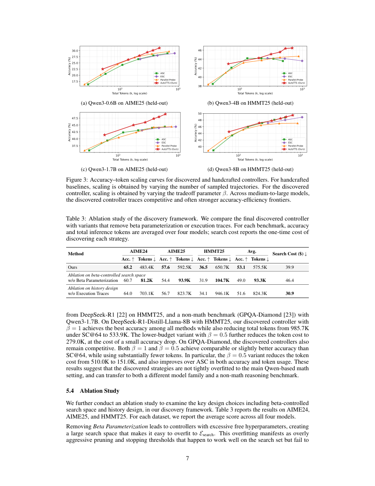

#1
★ 8/10
LLMs Improving LLMs: Agentic Discovery for Test-Time Scaling
LLM改进LLM：面向测试时扩展的智能体自动发现框架

图 Figure · Page 7 of paper
🎯 用LLM智能体自动发现最优测试时扩展策略，替代手工设计
AutoTTS uses an LLM agent to automatically discover optimal test-time scaling strategies, replacing manual heuristic design.
| 维度 | 中文 | English |
|---|---|---|
| ❓ 待解决 的问题 |
测试时扩展（TTS）通过在推理阶段分配更多计算资源来提升大模型性能，但现有策略全靠人工设计，研究员凭直觉决定何时分支、剪枝、停止。这导致大量策略空间未被探索，严重依赖人类经验。目前缺乏一种自动发现更优TTS策略的系统化方法。 | Test-time scaling (TTS) improves LLM performance by spending more compute during inference, but today's TTS strategies are all manually crafted — researchers hand-tune when to branch reasoning paths, when to prune, and how to allocate compute. This leaves most of the strategy space unexplored and is bottlenecked by human intuition. There is no principled, automated way to discover better TTS strategies. |
| 💡 解决 的亮点 |
• **环境驱动的自动发现**：AutoTTS将设计目标从单个TTS启发式规则转变为可供智能体自动搜索的"环境"，实现策略的自动发现。 • **无需重复调用LLM的廉价评估**：将TTS策略形式化为基于预收集推理轨迹和探针信号的控制器，候选策略无需反复调用昂贵LLM即可快速评估。 • **Beta参数化+执行轨迹反馈**：Beta参数化使搜索空间可控且细粒度，执行轨迹反馈帮助智能体诊断策略失败原因，大幅提升发现效率。 | • **Environment-driven discovery**: AutoTTS shifts the design target from individual TTS heuristics to *environments* where an LLM agent can automatically search and discover strategies. • **Cheap evaluation without LLM calls**: TTS strategies are formulated as controllers over pre-collected reasoning trajectories and probe signals, so candidate strategies can be evaluated without repeatedly calling expensive LLMs. • **Beta parameterization + trace feedback**: A beta parameterization makes the search space tractable and fine-grained, while execution trace feedback helps the agent diagnose *why* a strategy fails, boosting discovery efficiency. |
| 🧪 实验 内容 |
实验在数学推理基准上进行，包括MATH500、AMC、AIME等，并在留出基准上测试泛化能力。基线方法包括束搜索、Best-of-N采样以及其他手工设计的宽度-深度TTS策略。评估指标为准确率-计算成本权衡曲线，衡量不同计算预算下的推理准确率。同时测试了所发现策略在不同模型规模上的泛化性。 | Experiments were conducted on mathematical reasoning benchmarks including MATH500, AMC, AIME, and held-out benchmarks to test generalization. The baselines included strong manually designed TTS strategies such as beam search, best-of-N sampling, and other hand-crafted width–depth methods. The evaluation metric was accuracy–cost tradeoff, measuring reasoning accuracy at various compute budgets. Discovery was also tested for generalization across different model scales. |
| 📊 实验 结果 |
AutoTTS发现的策略在MATH500、AMC、AIME等数学推理基准上的准确率-成本权衡曲线上全面超越强手工设计基线。发现的策略可泛化到留出基准及不同模型规模，无需重新发现。最令人印象深刻的是，整个发现过程仅花费**$39.9**的API费用和**160分钟**的实际运行时间，展现出极高的成本效益。 | AutoTTS-discovered strategies outperform strong manually designed TTS baselines on the accuracy–cost tradeoff across mathematical reasoning benchmarks (MATH500, AMC, AIME). The discovered strategies generalize to held-out benchmarks and different model scales without re-discovery. Remarkably, the entire discovery process costs only **$39.9** in API fees and **160 minutes** of wall-clock time, demonstrating extreme cost efficiency compared to traditional NAS or manual tuning pipelines. |
| 🏁 结论 | AutoTTS证明了LLM智能体在精心设计的环境中能够自动发现优于手工设计的TTS策略，且成本极低。这将"环境设计"确立为测试时计算优化的新范式，比直接设计策略更具可扩展性和效能。 | AutoTTS proves that TTS strategies for LLMs can be automatically discovered by an LLM agent operating in a carefully designed environment, consistently outperforming hand-crafted baselines at a fraction of the cost. This establishes environment design — rather than strategy design — as a new and more powerful paradigm for test-time compute optimization. |
| 🔗 论文 链接 |
arXiv: 2605.08083v1 · 📥 PDF | |
⚙️ Method · 方法详解
AutoTTS构建一个发现环境，让LLM智能体迭代地提出、评估并改进TTS策略。将宽度-深度TTS问题形式化为控制器合成问题：控制器基于预收集的推理轨迹和轻量级探针信号，决定何时分支（宽度扩展）、继续、探针、剪枝或停止（深度扩展）。这样在策略搜索阶段无需反复调用昂贵的LLM。Beta参数化约束并平滑控制器决策空间使搜索可行，同时向智能体提供细粒度执行轨迹反馈，帮助其理解失败原因并持续改进策略。
AutoTTS constructs a discovery environment where an LLM agent iteratively proposes, evaluates, and refines TTS strategies. The width–depth TTS problem is formulated as controller synthesis: controllers decide when to branch (width), continue, probe, prune, or stop (depth) based on pre-collected reasoning trajectories and lightweight probe signals. This avoids costly repeated LLM inference during strategy search. Beta parameterization constrains and smooths the controller's decision space to make search tractable, and fine-grained execution trace feedback is provided to the agent so it can understand failure modes and iteratively improve its proposed strategies.
📐 Key Formulas · 关键公式
\[\text{Controller}: s_t \mapsto a_t \in \{\text{branch, continue, probe, prune, stop}\}\]
💡 控制器将当前推理状态映射为五种动作之一，决定测试时计算如何分配（宽度扩展还是深度控制）。
The controller maps the current reasoning state to one of five actions, determining how test-time compute is allocated across width (branching) and depth (continuation/stopping) dimensions.
\[\theta \sim \text{Beta}(\alpha, \beta)\]
💡 用Beta分布对控制器的决策阈值进行参数化，使搜索空间连续且可控，便于智能体细粒度调节策略。
Beta parameterization models the controller's decision thresholds as draws from a Beta distribution, making the search space continuous and tractable for fine-grained strategy tuning by the agent.
🌟 Why It Matters · 为什么重要
随着LLM推理成本日益受到关注，自动发现高效的测试时策略能显著降低对人类专家经验的依赖，探索远超手工设计的策略空间。该框架极低的发现成本（$39.9，160分钟）让自动TTS策略发现不再是大型实验室的专利，普通研究团队也能受益。
As LLMs are increasingly deployed under tight inference budgets, automatically discovering efficient test-time strategies removes a major human bottleneck and unlocks a much larger strategy space than manual design can cover. The framework's extreme cost-efficiency ($39.9, 160 min) makes automated TTS strategy discovery accessible to the broader research community, not just well-resourced labs.